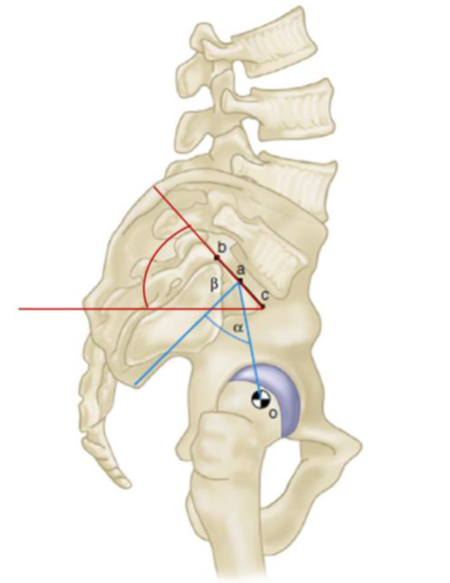
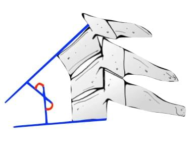

αβMedição pendente
= ?ângulo azul
= ?ângulo vermelho
Dois ângulos na figura. A banca pediu o nome de cada um, na ordem.
Com relação à biomecânica da coluna vertebral, alguns parâmetros são essenciais na avaliação do equilíbrio sagital. Na avaliação em perfil com o paciente em ortostase, os ângulos alfa e beta na imagem a seguir correspondem, respectivamente, a
inclinação pélvica e incidência pélvica.
incidência pélvica e inclinação sacral.
inclinação sacral e inclinação pélvica.
ângulo de deslizamento e inclinação da pélvica.
Entre a perpendicular ao platô sacral (no ponto médio) e a linha até o centro das cabeças femorais.
Entre o platô sacral e a horizontal.
Entre a linha do platô às cabeças femorais e a vertical. Aumenta na retroversão compensatória.
Morfológico: fixo no adulto, não muda com a postura. Posicional: muda quando a pelve gira.
Da perpendicular ao platô até a linha que desce ao centro da cabeça femoral.
Do platô sacral até a horizontal.
Repare: α parte da perpendicular ao platô; β usa o próprio platô.
α é a IP; β é a SS.
Não corresponde aos ângulos marcados: α é a IP.
Dois parâmetros posicionais, sem a IP.
O ângulo de deslizamento mede a cifose lombossacra na espondilolistese; não está na figura.
α e β = incidência pélvica e inclinação sacral. A IP não muda com a postura.
Tela ilustrativa
Qual você canta? A pergunta inteira está no próximo story.
Nas lesões traumáticas da coluna cervical subaxial, o valor do ângulo apresentado na imagem a seguir, a partir do qual indica instabilidade é de

3,5graus
7graus
11graus
20graus
É o limite da translação sagital.
Angulações dessa ordem ainda podem ser fisiológicas.
Translação em proporção ao corpo vertebral.
White e Panjabi: > 3,5 mm de translação ou > 11° de angulação.
Tela ilustrativa
ortoquestoes.com.br